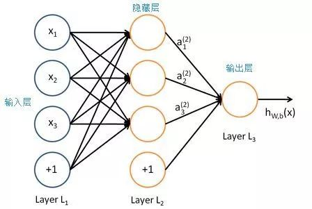

微信扫一扫
关注该公众号

智能搜索引擎的实质是根据用户的请求，从可以获得的网络资源中检索出对用户最有价值的信息。智能搜索引擎具有信息服务的智能化、人性化特征，允许用户采用自然语言进行信息的检索，为他们提供更方便、更确切的搜索服务。用户只要一次性输入搜索关键词就可以通过鼠标点击迅速切换到不同的分类或者引擎，极大地减少了手工输入网址打开搜索引擎，选择分类，再输入关键词搜索的时间。
智能问答机器人是基于自然语言处理和深度学习，实时与人对话，精确地定位访客所需要的提问知识，通过与访客进行交互，为访客提供个性化的信息服务。
智能问答机器人系统是将积累的无序语料信息，进行有序和科学的整理，并建立基于知识的分类模型。这些分类模型可以指导新增加的语料咨询和服务信息，节约人力资源，提高信息处理的自动性，降低运营成本。基于客户多年积累的自身基本情况常见问题及其解答，整理为规范的问答库形式，以支撑各种形式问题的智能问答。方便了用户，提高了办事效率，提升了政府或企业形象。
可见，智能问答机器人与智能搜索引擎有着本质的区别，相比较而言，智能问答系统的优势主要体现在以下几个方面。
对于多关键词的复杂句子，智能检索系统不知道哪条信息才是访客需要的，会同时给出很多答案，需要访客逐条筛选，耗时耗力。
智能检索需要访客逐条对比查找而智能机器人系统可以利用知识图谱进行推理，并回答出事实型问题。知识图谱通常把知识表示成三元组—— (主语、关系、宾语) ，其中关系表示主语和宾语之间存在的某种关系。
为了把用户query映射到知识图谱的三元组上，通常会使用到实体链接（把query中的实体对应到知识图谱中的实体）、关系抽取（识别query中包含的关系）和知识推理（query可能包含多个而不是单个关系，对应知识图谱中的一条路径，推理就是找出这条路径）等技术。
由以上这些技术衍生出了云问机器人特有的两类功能：
1）条件式自然语言筛选：用户可以自己上传多数据字段类的表格或对接业务管理系统，可实现基于语义的字段条件筛选，例如：有没有1.4L的无天窗的大众汽车，价格是多少呢？
条件式自然语言筛选2）会话式的业务数据生成：用户可以定义需要生成的业务数据类型，例如：帮我定一个明早八点到下午五点在南京会议室跟张丽开的产品研发会议，自动生成对应时间、会议室地点、与会人员、会议主题等字段信息。
会话式的业务数据生成这些基于人工智能技术而产生的功能是智能检索远远不能达到的。
智能检索系统不具备自主学习能力，无法对其知识库进行优化，只能人工逐条添加知识。
而智能机器人对于未知问题可以无监督聚类，并自动学习完成闭环，因此对于后期的知识库的扩容以及填充都是不断优化的。
云问机器人智能学习功能机器人智能学习的功能是指机器人会将访客提出的类似问题和问法都收集起来，在“智能学习”的界面，管理员可以在“可能问法列表”中勾选，通过与当前答案匹配的相似问法，机器人即可完成学习。也可以选择忽略该问题或者是回答该问题。机器人还拥有完全自动学习、无需人工干预的强大模式并在不断地优化升级中。
智能问答系统可以在APP、web页面、微博、微信等各个场景与客户实时互动，用户可以随时随地不设限地与智能机器人进行问答，比智能搜索更加便利。
 多渠道统一服务
多渠道统一服务
以云问智能问答系统为例，目前云问机器人可以覆盖包括微博、微信、APP、web页面、H5、论坛、支付宝、大屏、实体机器人等在内的多渠道终端服务，轻松服务各访问群体，并且支持将这些渠道进行统一管理以及数据集中统计。
深度学习，是机器学习中一种基于对数据进行表征学习的方法，概念源于人工神经网络的研究，其动机在于建立、模拟人脑进行分析学习的神经网络，它模仿人脑的机制来解释数据，例如图像，声音和文本。通过组合低层特征形成更加抽象的高层表示属性类别或特征，以发现数据的分布式特征表示，含多隐层的多层感知器就是一种深度学习结构。 深度学习的好处是用非监督式或半监督式的特征学习和分层特征提取高效算法来替代手工获取特征。
 含多个隐层的深度学习模型智能问答机器人基于自然语言处理和深度学习，实时与人对话，有一些寒暄以及上下文理解，相比传统的“关键词+模板”检索式的问答，更加贴近用户自然口语化表达，交流更自然，而且机器人可以反问引导并给出多维度的智能推荐。这样拟人化的交流使得用户体验更好，也增强了用户与机器人的黏性。
上下文分析、智能引导智能问答机器人可以对一句话进行分词检索匹配打分，智能识别访客的意图，推出相关答案，而智能检索只可以在搜索框输入关键词。关键词有多重语义，单单凭借关键词无法准确理解客户的意图。
通过与用户大量的多轮对话和任务场景对话，机器人将交互数据形成画像，可以实现对用户意图更加准确的识别，并不断学习沉淀新的语料。
人工智能语义意图识别的基本技术流程如下图所示：输入是Query+Context；之后进行自然语言的基本处理，进行分词词性标准及NER；在对话管理中，需要数据沉淀与积累，因此需要上下文模型和领域数据模型；在整个技术流程中，意识识别分类和意识属性抽取是其中的重头戏；最后通过意图语义表示再输出给对话管理系统。
语义意图识别的基本技术流程图智能搜索提供的答案是非结构化知识，包括文档式或固定答案等等，知识碎片化、无规律。而智能问答机器人提供的答案属于结构化知识，例如，除了答案本身，智能机器人也会围绕答案做纵向、横向的知识推荐，如文字链接、注意事项、流程等，答案类型多样化。
智能问答机器人的答案类型多样化还体现在具备知识隔离功能，不同层次、不同地域的人问机器人同样的问题，机器人可以根据需要给出不同答案。
云问机器人的知识隔离功能可以做到包含访问控制和运营控制在内的知识权限控制以及来访者角色控制 等。
◈访问控制：
1）不同部门除了有共同的知识公开，还有部门私密知识；
2）不同权限小组可以根据属性设定不同的知识访问域；
3）同一类型知识不同渠道、身份采用不同答案。
◈运营控制：
1）不同部门的人管理不同的知识、角色权限；
2）权限设计涵盖报表、数据、素材等全体系。
◈来访者角色控制：
1）根据不同身份属性（如地区、部门等）自定义组合生成来访者角色；
2）同个知识可以设定对于不同的来访角色给出不同回答，如：可以设定不同时区属性为不同的来访者角色，管理员只要编辑针对不同时期的不同回复即可；
3）可以设定不同来访者角色的管理权限，即规定某些管理员只能发布针对某些来访者角色的知识点。
实际应用场景中，用户与系统交互的过程中不免会涉及到闲聊成分。闲聊功能让对话机器人更有情感和温度，这是智能搜索引擎无法做到的。
智能机器人具备聊天功能机器人通常使用机器翻译中的深度学习seq2seq框架来产生闲聊功能的答复，如下图。
Chitchat-Bot的seq2seq模型框架智能问答机器人除了具备聊天逗趣功能，也有查询快递、查询天气、查询路线等实用功能，并可以识别用户情绪、识别问句中是否含有敏感信息，并对突发集中问题实时告警。
实用功能模块智能问答机器人可以将大数据与人工智能结合，对访客行为轨迹进行大数据分析，而智能检索是做不到这一点的。
深度数据分析智能机器人可以将数据生成丰富维度的BI报表，并可以直观方便地对于数据进行深度挖掘分析，企业有望不断地提升自己的服务、营销、产品乃至商业创新力。
智能问答机器人具有深度学习能力以及更强的人机交互能力，是人工智能技术的一个分支。未来，人工智能技术将更加先进、更加普及，也将深入到社会生活的方方面面。
— End —